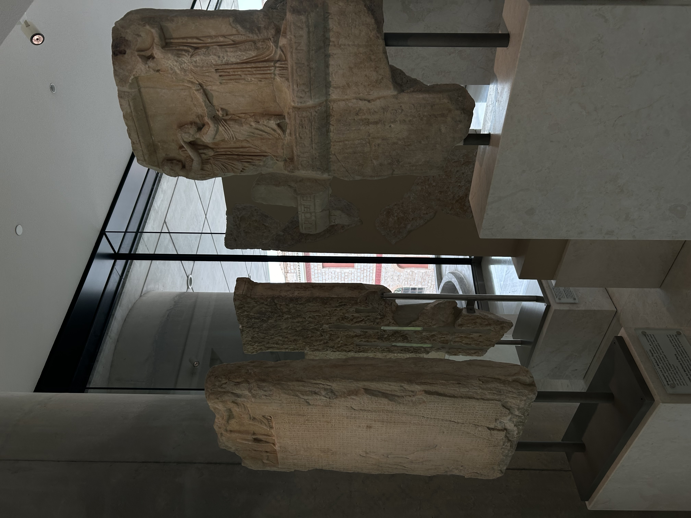
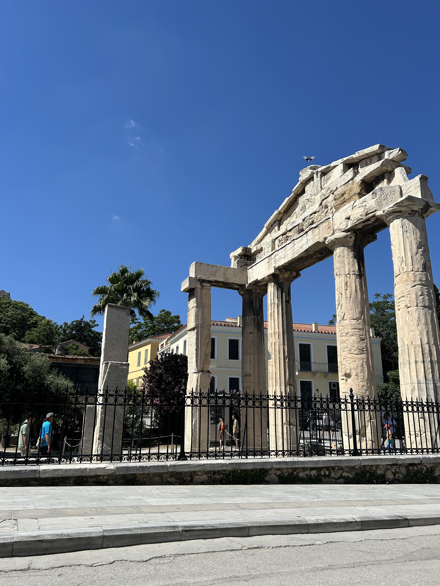
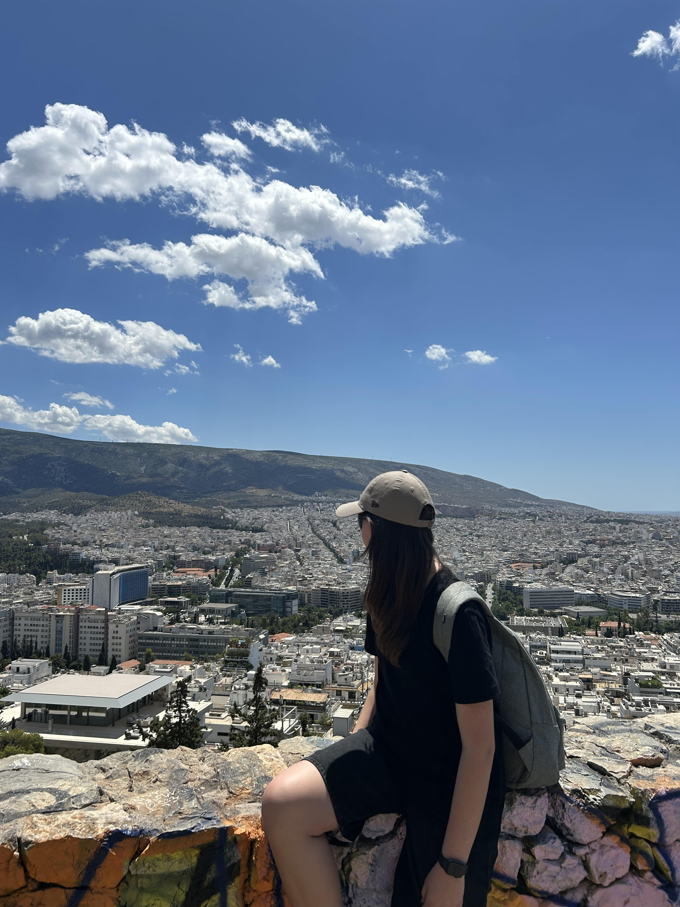

/* Element dla pojedyńczego posta/artykułu: kolor tła (biały), margines zewnętrzny dolny 20px, margines wewnętrzny 20px, ramka szerokości 1px ciągła w kolorze #e8491d */

MUZEUM AKROPOLU
W muzeum zobaczyłam i przeczytałam wiele ciekawych rzeczy,dzięki którym powiększyłam swoją wiedzę. Dodatkowo naszą uwagę zwróciły niezwykłe ruiny tuż obok muzeum.
/* Przykład użycia stylu inline: wyrównanie tekstu do prawej strony, podkreślenie tekstu, kolor czcionki: #800000*/
22.05
/* Wstawiamy w tym miejscu obrazek image1.jpg, ustawiamy alternatywny tekst który pokaże się w sytuacji kiedy obrazek nie może być załadowany*/

AGORA
Oglądanie takich zabytków jak powyżej było bardzo interesujące. W młodszych klasach uczyliśmy się o starożytniej Grecjii, a poznawanie tej historii na nowo jest niezwykle ciekawe.
23.05

WZGÓRZE LYCABETTUS
Wejście na to wzgórze było nie lada wyzwaniem jednak widok był tego wart. Na szczycie znajdowała się panorama na całe Ateny. Moje zdjęcie zostało zrobione podczas schodzenia ze stromej górki.
24.05